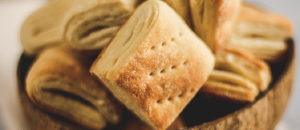

Receta de criollitos

Criollitos
Tiempo de preparación: 35'
Dificultad: Fácil
Ingredientes
Para la masa:
- ½ kilo de harina de trigo 0000
- 1 cucharada de sal marina
- 1 cucharadita de azúcar
- 3 gr de levadura seca de panadero
- 200 ml de agua
- 100 gr de margarina
Para el empaste:
- 100 gr de margarina
- 2 cucharadas de trigo 0000
Elaboración paso a paso
Para la masa:
- Colocar la harina, la sal, el azúcar y la levadura en un bowl. Mezclar bien.
- Agregar la margarina pomada e integrar con las manos.
- Agregar el agua de a poco y amasar hasta lograr un bollo tierno y liso. Amasar sobre la mesada durante aproximadamente 10 minutos.
- Dejar reposar el bollo tapado con film o un repasador húmedo durante 1 hora o hasta que duplique su volumen.
Para el empaste:
- Mezclar la margarina pomada con la harina formando una pasta.
Para el armado:
- Estirar la masa de forma rectangular hasta que mida 1 cm de espesor.
- Agregar el empaste en la mitad del rectángulo. Doblar la masa como si fuese un libro encerrando al empaste y sellar los bordes como si fuera el repulgue de una tarta.
- Dejar reposar la masa unos minutos y estirar con palo de amasar nuevamente. Esta vez, doblar la masa en tres, como si fuera una carta.
- Repetir el paso anterior al menos 3 veces y volver a estirar la masa hasta que quede de 1 cm de espesor.
- Cortar rectángulos de 8 cm de alto por el largo de la masa. Doblarlos a la mitad, emparejar los bordes y cortar cada 4 cm aproximadamente formando los criollitos.
- Colocar los criollitos en una asadera y pincharlos con un tenedor. Cubrir con paño húmedo y dejar reposar en un lugar cálido hasta que se hinchen.
- Cocinar en horno fuerte durante 15 o 20 minutos o hasta que estén levemente dorados.
- Dejar enfriar y servir.
Notas
Los bordes de masa que sobran del recorte no se tiran. Se vuelven amasar y se cortan en círculos para hacer bizcochitos.